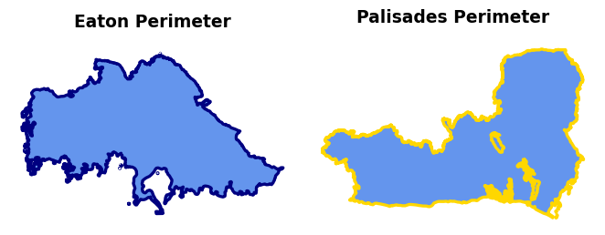
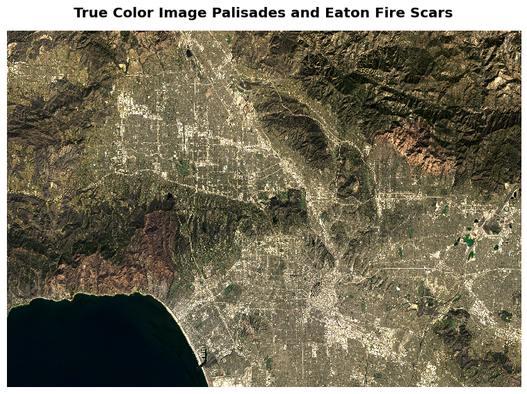
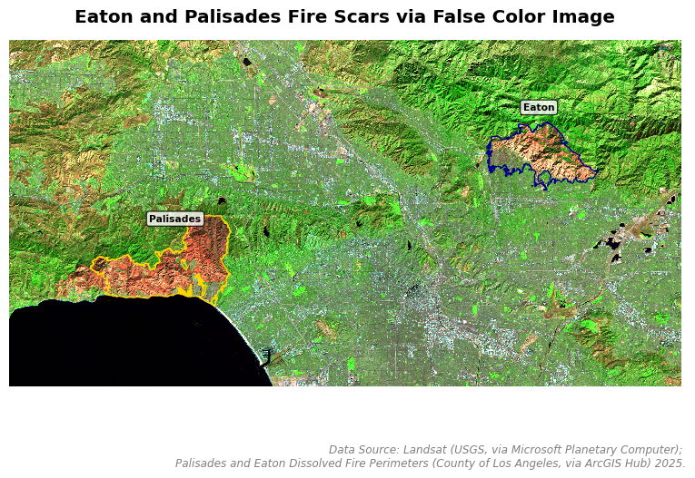
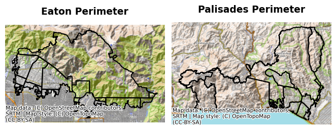
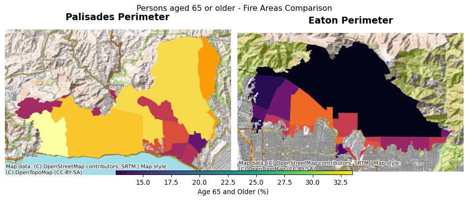
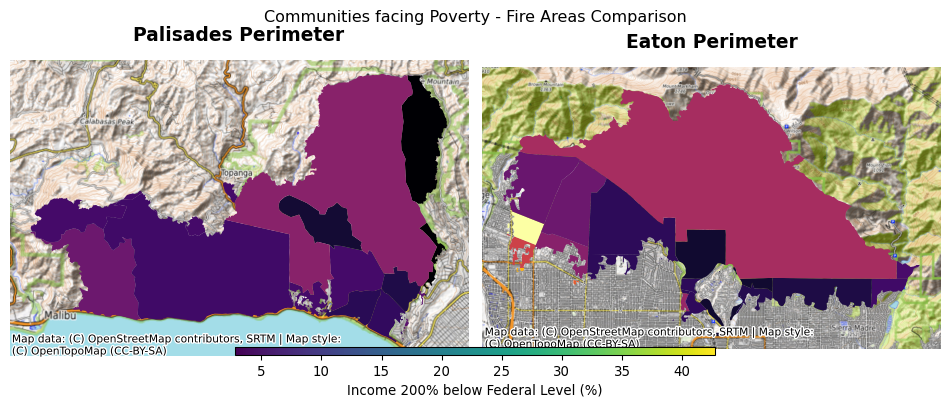
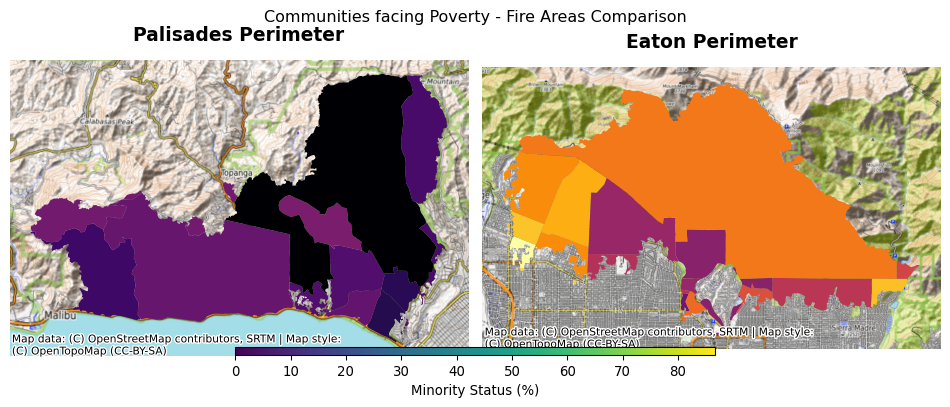

Show code
# Import libraries
import pandas as pd
import os
import numpy as np
import geopandas as gpd
import xarray as xr
import rioxarray
import matplotlib.pyplot as plt
import contextily as ctxDecember 2, 2026
This project is divided into two sections:
Additional information can be found at my GitHub repository.
This analysis explores the environmental impact caused by the fires in Palisades and Eaton that occurred on January 7, 2025 in Los Angeles County (LA). A false color image is created using the fire perimeters dataset and remote sensing techniques to depict the affected areas in contrast to those left untouched by the fires. The true color image shows the LA area, but it is hard to recognize the fire scars which is why assigning infrared to visible light in order to create a false color image highlights healthy vegetation, burn severity, and extent of fire scars. This can then help researchers plan restoration strategies and identify high-risk areas for future planning and reduce the environmental, economic, and personal damages cities face in the aftermath. Though communities are impacted disproportionately with some incapable of evacuating, recovering, and even rebuilding. The Environmental Justice Index will be used to measure the impacts of the fire on those who face socially vulnerable and less resilient.
spatial_ref.crs_wkt.NaN values with 0 for bands using RGB (visible light).EJI to cross-reference environmental burdens from the fires.The libraries used are the following:
The three major datasets for this analysis:
Landsat 8 satellite:
The first data set, collected by Landsat 8 satellite, is used for its collection of bands (red, green, blue, near-infrared and short-wave infrared), which is from the Landsat Collection 2 Level-2 atmospherically corrected surface reflectance data.
Palisades and Eaton Fire Perimeter:
The second dataset includes both the fire perimeters for Palisades and Eaton.
Environmental Justice Index:
The 2024 Environmental Justice Index produced by the Centers of Disease Control and PRevention (CDC) and Agency for Toxic Substances and Disease Registry (ASTDR). It is a place-based tool that measures the impacts of environmental burden focusing on human health and equity.
# Fire perimeter data
fp = os.path.join(
'data', 'Eaton_Perimeter_20250121',
'Eaton_Perimeter_20250121.shp')
eaton = gpd.read_file(fp)
fp = os.path.join(
'data', 'Palisades_Perimieter_20250121',
'Palisades_Perimieter_20250121.shp')
palisades = gpd.read_file(fp)
# Read Landsat
landsat = xr.open_dataset('data/landsat8-2025-02-23-palisades-eaton.nc')
landsat
# Read census data and dictionary
fp = os.path.join('data', 'EJI_2024_California', 'EJI_2024_California.gdb')
census = gpd.read_file(fp)
eji_dictionary = pd.read_csv('data/EJI_2024_California/EJI_DATADICTIONARY_2024.csv',
skiprows=1,
encoding='cp1252')Readings for color images and Landsat imagery:
After the data is imported, an exploration can be conducted using a few methods:
.info().head().shape()The data was explored using .head() as this gives shape, the column with their names and values. Though, using .info can get the same information as well as the d.types.
| OBJECTID | YEAR_ | STATE | AGENCY | UNIT_ID | FIRE_NAME | type | INC_NUM | IRWINID | ALARM_DATE | ... | GIS_ACRES | COMMENTS | COMPLEX_NA | COMPLEX_ID | FIRE_NUM | GlobalID | DECADES | Shape__Are | Shape__Len | geometry | |
|---|---|---|---|---|---|---|---|---|---|---|---|---|---|---|---|---|---|---|---|---|---|
| 0 | 1 | 2025 | CA | CDF | LAC | EATON | Heat Perimeter | 00009087 | {72660ADC-B5EF-4D96-A33F-B4EA3740A4E3} | 2025-01-08T00:00:00Z | ... | 14056.26 | None | None | None | None | 000a99c2-0fef-4960-a3c4-f2342a0cd291 | 2020-2025 | 0.005564 | 0.859026 | MULTIPOLYGON (((-118.10093 34.16680, -118.1008... |
1 rows × 24 columns
| OBJECTID | YEAR_ | STATE | AGENCY | UNIT_ID | FIRE_NAME | type | INC_NUM | IRWINID | ALARM_DATE | ... | GIS_ACRES | COMMENTS | COMPLEX_NA | COMPLEX_ID | FIRE_NUM | GlobalID | DECADES | Shape__Are | Shape__Len | geometry | |
|---|---|---|---|---|---|---|---|---|---|---|---|---|---|---|---|---|---|---|---|---|---|
| 0 | 1 | 2025 | CA | CDF | LDF | PALISADES | Heat Perimeter | 00000738 | {A7EA5D21-F882-44B8-BF64-44AB11059DC1} | 2025-01-07T00:00:00Z | ... | 23448.88 | None | None | None | None | 8aea8178-a9d8-4c10-a7fd-d1371091b114 | 2020-2025 | 0.009268 | 1.157614 | MULTIPOLYGON (((-118.51974 34.02996, -118.5198... |
1 rows × 24 columns
Visualization for both perimeters
Use .plot() to get a preliminary view on both the fire perimeters.
fig, (ax1, ax2) = plt.subplots(1, 2, figsize=(7,7))
# Remove the axis for a cleaner map
ax1.axis('off')
ax2.axis('off')
# Plot Eaton
eaton.plot(ax=ax1, color="cornflowerblue", linewidth=2.5, edgecolor="navy")
ax1.set_title('Eaton Perimeter',
fontsize=14, weight='bold', pad=15)
# Plot Palisades
palisades.plot(ax=ax2, color="cornflowerblue", linewidth=2.5, edgecolor="gold")
ax2.set_title('Palisades Perimeter',
fontsize=14, weight='bold', pad=15)
plt.tight_layout()
plt.show()
.head().# Explore CRS for both Palisades and Eaton
print(f"Palisades' CRS: {palisades.crs}")
print(f"Eaton's CRS: {eaton.crs}")
# Explore geographic or projected for Eaton
print('Is Eaton geographic?: ', eaton.crs.is_geographic)
print('Is Eaton projected?: ', eaton.crs.is_projected)
# Explore geographic or projected for Palisades
print('Is Palisades geographic?: ', palisades.crs.is_geographic)
print('Is Palisades projected?: ', palisades.crs.is_projected)Here the data, landsat, is being called to show the corresponding information.
<xarray.Dataset> Size: 78MB
Dimensions: (y: 1418, x: 2742)
Coordinates:
* y (y) float64 11kB 3.799e+06 3.799e+06 ... 3.757e+06 3.757e+06
* x (x) float64 22kB 3.344e+05 3.344e+05 ... 4.166e+05 4.166e+05
time datetime64[ns] 8B ...
Data variables:
red (y, x) float32 16MB ...
green (y, x) float32 16MB ...
blue (y, x) float32 16MB ...
nir08 (y, x) float32 16MB ...
swir22 (y, x) float32 16MB ...
spatial_ref int64 8B ...array([3799050., 3799020., 3798990., ..., 3756600., 3756570., 3756540.])
array([334410., 334440., 334470., ..., 416580., 416610., 416640.])
[1 values with dtype=datetime64[ns]]
[3888156 values with dtype=float32]
[3888156 values with dtype=float32]
[3888156 values with dtype=float32]
[3888156 values with dtype=float32]
[3888156 values with dtype=float32]
[1 values with dtype=int64]
PandasIndex(Index([3799050.0, 3799020.0, 3798990.0, 3798960.0, 3798930.0, 3798900.0,
3798870.0, 3798840.0, 3798810.0, 3798780.0,
...
3756810.0, 3756780.0, 3756750.0, 3756720.0, 3756690.0, 3756660.0,
3756630.0, 3756600.0, 3756570.0, 3756540.0],
dtype='float64', name='y', length=1418))PandasIndex(Index([334410.0, 334440.0, 334470.0, 334500.0, 334530.0, 334560.0, 334590.0,
334620.0, 334650.0, 334680.0,
...
416370.0, 416400.0, 416430.0, 416460.0, 416490.0, 416520.0, 416550.0,
416580.0, 416610.0, 416640.0],
dtype='float64', name='x', length=2742))The following five spectral bands are grouped:
red, green, and blue.nir08, discerns land-water boundaries that are not obvious in visible light and shows vegetation health due to the strong reflection which is the key point here.swir22, helps scientists estimate water presence in plants and soil which is helpful for mapping fire damage as more water means darker images.Other key aspects:
spatial_ref is the last variable and doesn’t belong to a spectral band.Landsat dataset is not a geosptatial object and will not have a CRS as shown in a verification check.
Using rio.write_crs(), the geospatial information found under spatial_ref.crs_wkt was found to be 32611.
A few adjustments were needed to be done before the final true color image of the burned areas for Palisades and Eaton.
Two warnings had to be addressed for a correct True Image:
Clipping Warning: “Clipping input data to the valid range for imshow with RGB data ([0..1] for floats or [0..255] for integers).” This was addressed by using robust=True, which adjusts the scale used for plotting to get inside the range for imshow.
RuntimeWarning: “invalid value encountered in cast xx = (xx * 255).astype(np.uint8)” After accounting for NaN resolved the warning since those values were missing and incapable of being converted into integers when mapped, which came from the bands, green and blue.
A for loop was created to find the missing values NaN inside each band, then replaced with 0.
The true image created depict LA from satelite view showing the burned areas, shown as reddish-brown.

Both perimeters were re-projected to the landsat data. Now, the perimeters can be included into the satelite map.
For this false color image, the spectral bands used are the following in the exact order:
swir22nir08redThe following were incoporated to create the map:
.to_dataarray().plot.imshow() to create an RGB image with the data.for loop to place the proper names of the perimeters using their geometry and# False Color Map
fig, ax = plt.subplots(figsize=(8, 6))
# Remove axis
ax.axis('off')
# Plot false color image
landsat[['swir22', 'nir08', 'red']].to_dataarray().plot.imshow(
ax=ax, robust=True)
# Plot fire perimeter polygons on top of the image
eaton.boundary.plot(ax=ax,
color="navy",
linewidth=1, label="Eaton Fire Perimeter")
palisades.boundary.plot(ax=ax,
color="gold",
linewidth=1, label="Palisades Fire Perimeter")
# Add fire names as text annotations
for fire, name in [(eaton, 'Eaton'), (palisades, 'Palisades')]:
center = fire.geometry.centroid.iloc[0]
ax.text(center.x, center.y + 5500, name, fontsize=8,
ha='center', weight='bold', bbox=dict(
boxstyle='round,pad=0.3',
facecolor='white',
edgecolor='black', alpha=0.8)
)
# Add labels
ax.set_title('Eaton and Palisades Fire Scars via False Color Image',
fontsize=15,
weight='bold',
pad=15
)
# Add source
fig.text(
0.99,
0.01,
"Data Source: Landsat (USGS, via Microsoft Planetary Computer); \n"
"Palisades and Eaton Dissolved Fire Perimeters (County of Los Angeles, via ArcGIS Hub) 2025.",
ha="right",
va="bottom",
fontsize=9,
color="gray",
style="italic",
)
ax.ticklabel_format(style='plain', useOffset=False)
plt.tight_layout()
plt.show()
The EJ Index comes with a dictionary describing the variables with the inital letter corresponding with their measurements:
The technical documentation for EJI has defined SVM as Social Vulnerability Module, through the dictionary .loc() can be used to select from the MODULE column that will show us the variables plus their description.
| 2024 VARIABLE NAME | 2022 VARIABLE NAME | 2024 VARIABLE DESCRIPTION | MODULE | DOMAIN | DATA SOURCE | 2024 TABLE FIELD CALCULATION | NOTES | |
|---|---|---|---|---|---|---|---|---|
| 0 | STATEFP | STATEFP | State Federal Information Processing Series (F... | No Value | No Value | No Value | No Value | No Value |
| 1 | COUNTYFP | COUNTYFP | County FIPS code | No Value | No Value | No Value | No Value | No Value |
| 2 | TRACTCE | TRACTCE | Census tract geographic code | No Value | No Value | The U.S. Census Bureau 2020 Cartographic Bound... | No Value | No Value |
| 3 | AFFGEOID | AFFGEOID | Census tract identifier; a concatenation of cu... | No Value | No Value | No Value | No Value | No Value |
| 4 | GEOID | GEOID | 11-digit census tract identifier, which is a c... | No Value | No Value | No Value | 2020 State FIPS + 2020 County FIPS + 2020 Cens... | Connecticut tracts are using updated 2022 Coun... |
# Selecting column 2024 variable name and removin trailing characters
eji_dictionary['2024 VARIABLE NAME'] = eji_dictionary['2024 VARIABLE NAME'].str.strip()
# Locate and display 8 of the module from the dictionary showing the desciption and domain
pd.set_option("display.precision", 8)
eji_dictionary.loc[eji_dictionary['MODULE'] == 'SVM', ['2024 VARIABLE NAME', '2024 VARIABLE DESCRIPTION', 'DOMAIN']]| 2024 VARIABLE NAME | 2024 VARIABLE DESCRIPTION | DOMAIN | |
|---|---|---|---|
| 19 | E_MINRTY | Percentage of persons who identify as Hispanic... | SVM DOM1 |
| 20 | EPL_MINRTY | Percentile rank of percentage of persons who i... | SVM DOM1 |
| 21 | SPL_SVM_DOM1 | Domain consisting of the percentage of persons... | SVM DOM1 |
| 22 | RPL_SVM_DOM1 | Percentile rank of domain consisting of the pe... | SVM DOM1 |
| 23 | E_POV200 | Percentage of persons with income below 200% o... | SVM DOM2 |
| 24 | EPL_POV200 | Percentile rank of the percentage of persons w... | SVM DOM2 |
| 25 | E_NOHSDP | Percentage of persons with no high school dipl... | SVM DOM2 |
| 26 | EPL_NOHSDP | Percentile rank of percentage of persons with ... | SVM DOM2 |
| 27 | E_UNEMP | Percentage of persons who are unemployed | SVM DOM2 |
| 28 | EPL_UNEMP | Percentile rank of the percentage of persons w... | SVM DOM2 |
| 29 | E_RENTER | Percentage of housing units that are renter oc... | SVM DOM2 |
| 30 | EPL_RENTER | Percentile rank of the percentage of housing u... | SVM DOM2 |
| 31 | E_HOUBDN | Percentage of households that make less than 7... | SVM DOM2 |
| 32 | EPL_HOUBDN | Percentile rank of the percentage of household... | SVM DOM2 |
| 33 | E_UNINSUR | Percentage of persons who are uninsured (i.e.,... | SVM DOM2 |
| 34 | EPL_UNINSUR | Percentile rank of the percentage of persons w... | SVM DOM2 |
| 35 | E_NOINT | Percentage of persons without internet | SVM DOM2 |
| 36 | EPL_NOINT | Percentile rank of the percentage of persons w... | SVM DOM2 |
| 37 | SPL_SVM_DOM2 | Domain consisting of persons below 200% of the... | SVM DOM2 |
| 38 | RPL_SVM_DOM2 | Percentile rank of the domain consisting of pe... | SVM DOM2 |
| 39 | E_AGE65 | Persons aged 65 and older | SVM DOM3 |
| 40 | EPL_AGE65 | Percentile rank of the percentage of persons a... | SVM DOM3 |
| 41 | E_AGE17 | Persons aged 17 and younger | SVM DOM3 |
| 42 | EPL_AGE17 | Percentile rank of the percentage of persons a... | SVM DOM3 |
| 43 | E_DISABL | Percentage of civilian noninstitutionalized pe... | SVM DOM3 |
| 44 | EPL_DISABL | Percentile rank of the percentage of civilian ... | SVM DOM3 |
| 45 | E_LIMENG | Percentage of persons (age 5+) who speak Engli... | SVM DOM3 |
| 46 | EPL_LIMENG | Percentile rank of the percentage of persons (... | SVM DOM3 |
| 47 | SPL_SVM_DOM3 | Domain consisting of English language proficie... | SVM DOM3 |
| 48 | RPL_SVM_DOM3 | Percentile rank of the domain consisting of En... | SVM DOM3 |
| 49 | E_MOBILE | Percentage of housing units designated as mobi... | SVM DOM4 |
| 50 | EPL_MOBILE | Percentile rank of the percentage of housing u... | SVM DOM4 |
| 51 | E_GROUPQ | Percentage of persons living in group quarters | SVM DOM4 |
| 52 | EPL_GROUPQ | Percentile rank of the percentage of persons l... | SVM DOM4 |
| 53 | SPL_SVM_DOM4 | Domain consisting of mobile homes and housing ... | SVM DOM4 |
| 54 | RPL_SVM_DOM4 | Percentile rank of the domain consisting of mo... | SVM DOM4 |
| 55 | SPL_SVM | Summation of the Social Vulnerability Module p... | No Value |
| 56 | RPL_SVM | Percentile ranks of Social Vulnerability Module | No Value |
The EJI data can be explored using .head().
| OBJECTID | STATEFP | COUNTYFP | TRACTCE | AFFGEOID | GEOID | GEOID_2020 | COUNTY | StateDesc | STATEABBR | ... | TWOMORE | E_TWOMORE | OTHERRACE | E_OTHERRACE | Tribe_PCT_Tract | Tribe_Names | Tribe_Flag | Shape_Length | Shape_Area | geometry | |
|---|---|---|---|---|---|---|---|---|---|---|---|---|---|---|---|---|---|---|---|---|---|
| 0 | 11620 | 06 | 077 | 005127 | 140000US06077005127 | 06077005127 | 06077005127 | San Joaquin County | California | CA | ... | 408.0 | 5.4 | 0.0 | 0.0 | 0.0 | -999 | -999 | 5909.70313544 | 1.96257728e+06 | MULTIPOLYGON (((-2178538.439 328974.247, -2178... |
| 1 | 11557 | 06 | 077 | 003406 | 140000US06077003406 | 06077003406 | 06077003406 | San Joaquin County | California | CA | ... | 203.0 | 5.4 | 0.0 | 0.0 | 0.0 | -999 | -999 | 3805.32254211 | 8.54174105e+05 | MULTIPOLYGON (((-2174646.947 350500.600, -2174... |
| 2 | 11594 | 06 | 077 | 004402 | 140000US06077004402 | 06077004402 | 06077004402 | San Joaquin County | California | CA | ... | 132.0 | 2.2 | 0.0 | 0.0 | 0.0 | -999 | -999 | 8576.41637798 | 4.34542071e+06 | MULTIPOLYGON (((-2169306.156 358323.611, -2169... |
| 3 | 11617 | 06 | 077 | 005124 | 140000US06077005124 | 06077005124 | 06077005124 | San Joaquin County | California | CA | ... | 161.0 | 4.8 | 0.0 | 0.0 | 0.0 | -999 | -999 | 4842.26567050 | 1.08520699e+06 | MULTIPOLYGON (((-2174819.146 325432.172, -2174... |
| 4 | 11509 | 06 | 077 | 001700 | 140000US06077001700 | 06077001700 | 06077001700 | San Joaquin County | California | CA | ... | 160.0 | 3.8 | 0.0 | 0.0 | 0.0 | -999 | -999 | 5087.38477553 | 1.68639954e+06 | MULTIPOLYGON (((-2172633.856 343802.277, -2172... |
5 rows × 174 columns
There can be a detailed exploration for the dataset’s CRS.
# Check the data type of the census dataframe
print(type(census))
# Check the data type of the geometry column
print(type(census.geometry))
# Check CRS
census.crs
# Examine CRS details
print('Ellipsoid: ', census.crs.ellipsoid)
print('Datum: ', census.crs.datum)
print('Is geographic?: ', census.crs.is_geographic)
print('Is projected?: ', census.crs.is_projected)The EJI details are the following:
GeoDataFame and GeoSeries.The goal for this social dimensions analysis is to visualize which communities from Palisades and Eaton were impacted by the fires. Before a map can be generate the CRS from all datasets need to match usin .to_crs().
Now, the two datasets can be spatially joined using gpd.sjoin.
Repeat for Eaton fire perimeter.
Clip the EJI data using the palisades perimeter to remove anything outside the intersection of the two using geopandas.clip.
Repeat for Eaton fire perimeter
| OBJECTID_left | STATEFP | COUNTYFP | TRACTCE | AFFGEOID | GEOID | GEOID_2020 | COUNTY | StateDesc | STATEABBR | ... | OBJECTIVE | GIS_ACRES | COMMENTS | COMPLEX_NA | COMPLEX_ID | FIRE_NUM | GlobalID | DECADES | Shape__Are | Shape__Len | |
|---|---|---|---|---|---|---|---|---|---|---|---|---|---|---|---|---|---|---|---|---|---|
| 6714 | 7049 | 06 | 037 | 461300 | 140000US06037461300 | 06037461300 | 06037461300 | Los Angeles County | California | CA | ... | 1 | 14056.26 | None | None | None | None | 000a99c2-0fef-4960-a3c4-f2342a0cd291 | 2020-2025 | 0.0055639 | 0.85902622 |
| 430 | 7051 | 06 | 037 | 461501 | 140000US06037461501 | 06037461501 | 06037461501 | Los Angeles County | California | CA | ... | 1 | 14056.26 | None | None | None | None | 000a99c2-0fef-4960-a3c4-f2342a0cd291 | 2020-2025 | 0.0055639 | 0.85902622 |
| 5580 | 7045 | 06 | 037 | 460900 | 140000US06037460900 | 06037460900 | 06037460900 | Los Angeles County | California | CA | ... | 1 | 14056.26 | None | None | None | None | 000a99c2-0fef-4960-a3c4-f2342a0cd291 | 2020-2025 | 0.0055639 | 0.85902622 |
| 7473 | 7047 | 06 | 037 | 461100 | 140000US06037461100 | 06037461100 | 06037461100 | Los Angeles County | California | CA | ... | 1 | 14056.26 | None | None | None | None | 000a99c2-0fef-4960-a3c4-f2342a0cd291 | 2020-2025 | 0.0055639 | 0.85902622 |
| 3605 | 7046 | 06 | 037 | 461000 | 140000US06037461000 | 06037461000 | 06037461000 | Los Angeles County | California | CA | ... | 1 | 14056.26 | None | None | None | None | 000a99c2-0fef-4960-a3c4-f2342a0cd291 | 2020-2025 | 0.0055639 | 0.85902622 |
5 rows × 198 columns
Visualize both perimeters:
# Have both perimeters be shown side by side
fig, (ax1, ax2) = plt.subplots(1, 2, figsize=(7,7))
# Remove individual axis
ax1.axis('off')
ax2.axis('off')
# Plot Eaton and Palisades on different axis
eaton_census.plot(ax=ax1, color = 'none', linewidth=1.5)
palisades_census.plot(ax=ax2, color = 'none', linewidth=1.5)
# Basemap add
ctx.add_basemap(ax1, crs=eaton.crs, source=ctx.providers.OpenTopoMap)
ctx.add_basemap(ax2, crs=palisades.crs, source=ctx.providers.OpenTopoMap)
# Add title to identify perimeters
ax1.set_title('Eaton Perimeter',
fontsize=14, weight='bold', pad=15)
ax2.set_title('Palisades Perimeter',
fontsize=14, weight='bold', pad=15)
plt.tight_layout()
plt.show()
The following code is a preliminary check for both fire perimeters intersecting with the EJI and the column TRACTCE returning a colored map coordinating with every county code.
Examine the effects of the fires’ impact on communities who face poverty, defined as having income below 200% of federal poverty level, aged 65 or older, or reported as minority. The data is from U.S. Census Bureau American Community Survey (ACS) from the years 2018 to 2022.
Three eji_variables to be mapped are:
E_POV200: Percentage of persons with income below 200% of federal poverty levelE_AGE65: Estimates of the percent of population aged 65 and older in each census tract were then sorted and assigned a percentile ranking.E_MINRTYThese three choices will show the affects of the fires in a temporal case: before, during, and after. Those who are affected before the disaster event, during, and conitnue to be impacted even long after.
The first map depicts those in Palisades and Eaton who are people over the age of 65 or older.
fig, (ax1, ax2) = plt.subplots(1, 2, figsize=(10, 4))
# Add census
eji_variable = 'E_AGE65'
# Find common min/max for legend range
vmin = min(palisades_census[eji_variable].min(), eaton_census[eji_variable].min())
vmax = max(palisades_census[eji_variable].max(), eaton_census[eji_variable].max())
# Plot Palisades census
palisades_census.plot(
column=eji_variable,
vmin=vmin, vmax=vmax,
cmap='inferno',
legend=False,
ax=ax1)
# Plot Eaton census
eaton_census.plot(
column=eji_variable,
vmin=vmin, vmax=vmax,
cmap='inferno',
legend=False,
ax=ax2)
# Add basemap using contextily
ctx.add_basemap(ax2, crs=eaton.crs, source=ctx.providers.OpenTopoMap)
ctx.add_basemap(ax1, crs=palisades.crs, source=ctx.providers.OpenTopoMap)
# Add title to identify perimeters
ax2.set_title('Eaton Perimeter',
fontsize=14, weight='bold', pad=15)
ax1.set_title('Palisades Perimeter',
fontsize=14, weight='bold', pad=15)
# Add overall title
fig.suptitle('Persons aged 65 or older - Fire Areas Comparison')
# Remove axis
ax1.axis('off')
ax2.axis('off')
# Add shared colorbar at the bottom
sm = plt.cm.ScalarMappable(norm=plt.Normalize(vmin=vmin, vmax=vmax))
cbar_ax = fig.add_axes([0.25, 0.08, 0.5, 0.02]) # [left, bottom, width, height]
cbar = fig.colorbar(sm, cax=cbar_ax, orientation='horizontal')
cbar.set_label('Age 65 and Older (%) ')
plt.tight_layout()
plt.show()
fig, (ax1, ax2) = plt.subplots(1, 2, figsize=(10, 4))
# Add census
eji_variable = 'E_POV200'
# Find common min/max for legend range
vmin = min(palisades_census[eji_variable].min(), eaton_census[eji_variable].min())
vmax = max(palisades_census[eji_variable].max(), eaton_census[eji_variable].max())
# Plot Palisades census
palisades_census.plot(
column=eji_variable,
vmin=vmin, vmax=vmax,
cmap='inferno',
legend=False,
ax=ax1)
# Plot Eaton census
eaton_census.plot(
column=eji_variable,
vmin=vmin, vmax=vmax,
cmap='inferno',
legend=False,
ax=ax2)
# Add basemap using contextily
ctx.add_basemap(ax2, crs=eaton.crs, source=ctx.providers.OpenTopoMap)
ctx.add_basemap(ax1, crs=palisades.crs, source=ctx.providers.OpenTopoMap)
# Add title to identify perimeters
ax2.set_title('Eaton Perimeter',
fontsize=14, weight='bold', pad=15)
ax1.set_title('Palisades Perimeter',
fontsize=14, weight='bold', pad=15)
# Add overall title
fig.suptitle('Communities facing Poverty - Fire Areas Comparison')
# Remove axis
ax1.axis('off')
ax2.axis('off')
# Add shared colorbar at the bottom
sm = plt.cm.ScalarMappable(norm=plt.Normalize(vmin=vmin, vmax=vmax))
cbar_ax = fig.add_axes([0.25, 0.08, 0.5, 0.02]) # [left, bottom, width, height]
cbar = fig.colorbar(sm, cax=cbar_ax, orientation='horizontal')
cbar.set_label('Income 200% below Federal Level (%)')
plt.tight_layout()
plt.show()
fig, (ax1, ax2) = plt.subplots(1, 2, figsize=(10, 4))
# Add census
eji_variable = 'E_MINRTY'
# Find common min/max for legend range
vmin = min(palisades_census[eji_variable].min(), eaton_census[eji_variable].min())
vmax = max(palisades_census[eji_variable].max(), eaton_census[eji_variable].max())
# Plot Palisades census
palisades_census.plot(
column=eji_variable,
vmin=vmin, vmax=vmax,
cmap='inferno',
legend=False,
ax=ax1)
# Plot Eaton census
eaton_census.plot(
column=eji_variable,
vmin=vmin, vmax=vmax,
cmap='inferno',
legend=False,
ax=ax2)
# Add basemap using contextily
ctx.add_basemap(ax2, crs=eaton.crs, source=ctx.providers.OpenTopoMap)
ctx.add_basemap(ax1, crs=palisades.crs, source=ctx.providers.OpenTopoMap)
# Add title to identify perimeters
ax2.set_title('Eaton Perimeter',
fontsize=14, weight='bold', pad=15)
ax1.set_title('Palisades Perimeter',
fontsize=14, weight='bold', pad=15)
# Add overall title
fig.suptitle('Communities facing Poverty - Fire Areas Comparison')
# Remove axis
ax1.axis('off')
ax2.axis('off')
# Add shared colorbar at the bottom
sm = plt.cm.ScalarMappable(norm=plt.Normalize(vmin=vmin, vmax=vmax))
cbar_ax = fig.add_axes([0.25, 0.08, 0.5, 0.02]) # [left, bottom, width, height]
cbar = fig.colorbar(sm, cax=cbar_ax, orientation='horizontal')
cbar.set_label('Minority Status (%)')
plt.tight_layout()
plt.show()
I chose three EJI variables to examine the city of Palisades and Eaton pertaining to the communities that were affected by the fires. As mentioned, a full story includes those who affected even before the disaster event occured. People over the age of 65 have a higher chance having mobility or health issues that can limit their ability to evacuate even when givin a warning in advance to do so. This increases their chances in remaining in a danger zone while a wildfire is advancing or actively burning in the vicinity. The other variable I chose was those who are considered a minority based on race or ethnic (identify as non-white) as this may impact their chances in receiving aid or rescue after those in more affluent areas with higher percentage of those identified as white. Last, poverty was examined as those who are considered to have an income 200% below federal level may have less resilience or ability to recover and rebuild. During an active wildfire and the aftermath affect communities disproportionately as some may not have equal ability to evacuate, receive support, or can return to pre-disaster status.
County of Los Angeles. (2025). Palisades and Eaton dissolved fire perimeters [Dataset]. ArcGIS Hub. https://hub.arcgis.com/maps/ad51845ea5fb4eb483bc2a7c38b2370c
CDC. (2024, December 3). EJI data download. Place and Health - Geospatial Research, Analysis, and Services Program (GRASP). (https://www.atsdr.cdc.gov/place-health/php/eji/eji-data-download.html)
NASA. (2025, December 8). Why is that forest red and that cloud blue? How to interpret a false-color satellite image. https://science.nasa.gov/earth/earth-observatory/how-to-interpret-a-false-color-satellite-image/
U.S. Geological Survey. (2025). Landsat Collection 2 Level-2 [Dataset]. Microsoft Planetary Computer. https://planetarycomputer.microsoft.com/dataset/landsat-c2-l2